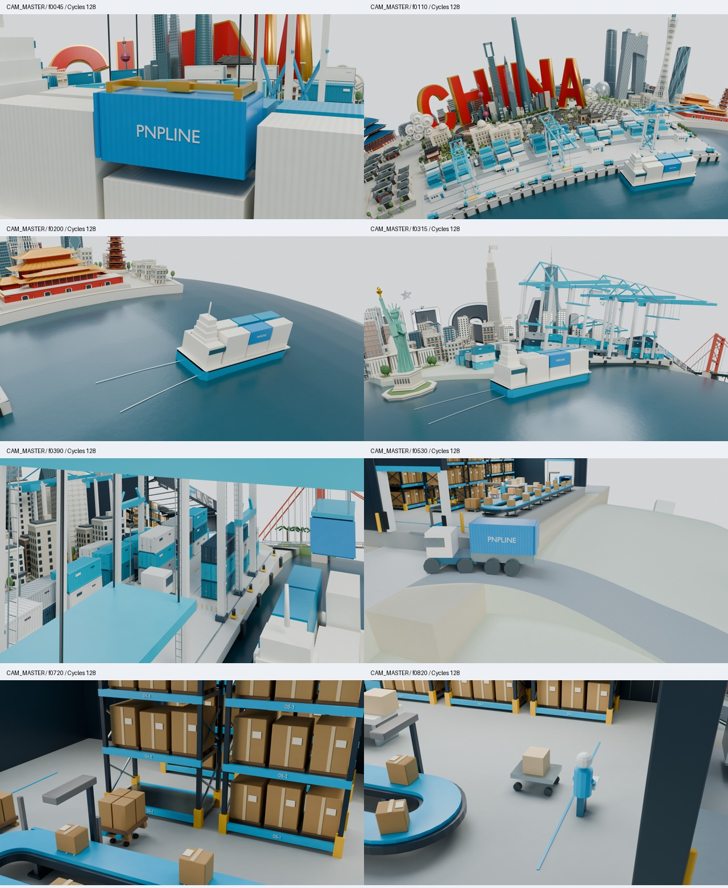

PNPLINE / BLENDER LOOK DEVELOPMENT / v001
정교한 미니어처, 일관된 재료와 빛
Cycles OptiX · AgX · 실제 CAM_MASTER · 0–989 / 30fps 보존
현재 결과 SHA256: d70225854020d360ae681db663da692bb6ad67f06212c9b1b877c64f4e644369
원본 형상·카메라·타이밍을 보존하고 재질, 조명, 월드, 색 관리를 변경했습니다. 전후 모두 동일 카메라·동일 프레임의 Cycles 렌더입니다. 원본은 저장하지 않고 렌더 엔진과 출력 품질만 검토용으로 맞췄습니다.
동일 프레임 전후 비교
원본 크기로 확인하려면 이미지를 새 탭에서 여세요.
1440px / 390px 표시 검토
가로 영상의 축소 가독성을 검토합니다. 현재 배포 설정이 가리키는 웹페이지 파일은 없으므로, 실제 운영 페이지 합성 검증으로 표시하지 않습니다.
연속 구간 · 실제 속도
각 구간은 원래 30fps로 재생됩니다. 1초 검토 구간이므로 반복 경계의 점프는 원본 영상의 컷이 아닙니다.
중국 항만 · 유리와 수면
프레임 105–134 · 30fps · 1초 · 1920×1080
고품질 검토 영상 · 웹 압축 영상 · 연속 프레임
미국 항만 이동
프레임 330–359 · 30fps · 1초 · 1920×1080
고품질 검토 영상 · 웹 압축 영상 · 연속 프레임
창고 내부
프레임 710–739 · 30fps · 1초 · 1920×1080
고품질 검토 영상 · 웹 압축 영상 · 연속 프레임
대표 스타일 프레임

설정 · 렌더 방법 · 990프레임 보존 검증 · 재질 명세 · 영상/압축 측정